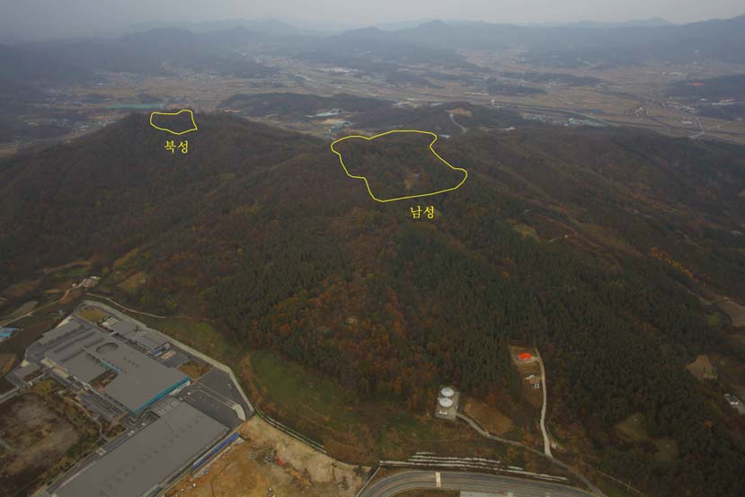

증평 검정고시 — 40·50대라면 국어·한국사부터 점수를 쌓으세요

마흔, 쉰이 넘어 다시 책을 펴면 가장 먼저 떠오르는 과목이 수학과 영어입니다. 학창 시절 가장 어려웠던 기억이 그 두 과목에 남아 있기 때문입니다. 그래서 그 둘부터 붙잡았다가 몇 주 만에 지쳐 내려놓는 분이 많습니다. 증평(증평군) 검정고시를 준비하시는 만학도분들께 순서를 바꿔 보시라고 권하는 이유를 정리했습니다.
살아온 시간이 점수가 되는 과목이 있습니다
국어 지문은 편지, 안내문, 신문 기사, 짧은 수필처럼 생활 속 글이 많이 나옵니다. 오랜 사회생활로 이런 글을 수없이 읽어 온 분들은 처음 보는 지문도 무슨 이야기인지 금방 잡습니다. 한국사도 마찬가지입니다. 뉴스와 드라마, 어른들께 들은 이야기로 이미 알고 있는 사건과 인물이 생각보다 많습니다.
처음 몇 주에 "생각보다 되네"라는 느낌을 받는 것이 중요합니다. 그 느낌이 있어야 어려운 과목으로 넘어갈 힘이 생깁니다. 그래서 첫 과목은 가장 빨리 점수가 보이는 과목으로 고르는 편이 좋습니다.
국어는 문제부터 읽는 순서만 익혀도 달라집니다
국어에서 막히는 지점은 대개 내용이 아니라 순서입니다. 지문을 처음부터 끝까지 꼼꼼히 읽고 나서 문제를 보면 다시 지문으로 돌아가야 하고, 그러다 시간이 모자랍니다. 문제를 먼저 읽고, 무엇을 찾을지 정한 다음 지문을 읽는 순서만 익혀도 같은 실력으로 맞히는 문제가 늘어납니다.
문학 용어(비유, 화자, 시점 같은 말)는 처음엔 낯설지만 개수가 많지 않습니다. 한 장에 정리해 두고 문제를 풀 때마다 다시 보면 몇 주 안에 익숙해집니다.
한국사는 외우기 전에 흐름부터
고졸 검정고시라면 한국사가 필수 과목입니다. 연도와 이름부터 외우려 하면 금방 지칩니다. 먼저 삼국 → 고려 → 조선 → 개항기 → 일제강점기 → 현대로 이어지는 큰 줄기를 이야기처럼 한 번 훑으세요. 줄기가 잡히면 세부 내용은 그 위에 하나씩 얹기만 하면 됩니다.
40·50대 분들은 근현대사 부분이 특히 수월한 경우가 많습니다. 직접 겪었거나 부모님께 들은 시기라 장면이 머릿속에 그려지기 때문입니다. 그 부분에서 점수를 먼저 확보하고 앞쪽 시대로 넓혀 가는 방법도 있습니다.
수학·영어는 그다음에, 하루 짧게라도 매일
국어·한국사가 어느 정도 자리를 잡으면 수학과 영어를 붙입니다. 이 두 과목은 몰아서 하기보다 매일 짧게 보는 쪽이 낫습니다. 검정고시는 전 과목 평균 60점이면 합격이라, 국어·한국사에서 넉넉히 받아 두면 수학·영어는 기초 문제를 확실히 맞히는 것만으로도 평균을 맞출 수 있습니다.
증평에서 이렇게 함께합니다
저희는 1:1 맞춤 과외라 정해진 진도표 대신 지금 편한 과목에서 출발합니다. 증평읍과 도안면은 방문 수업이 가능하고, 일이나 집안일로 시간이 일정하지 않으시면 화상(줌) 수업으로 시간을 맞춰 이어 갑니다.
관련 검색어: 증평검정고시 · 증평검정고시과외 · 증평군검정고시과외 · 충북증평검정고시 · 증평만학도검정고시